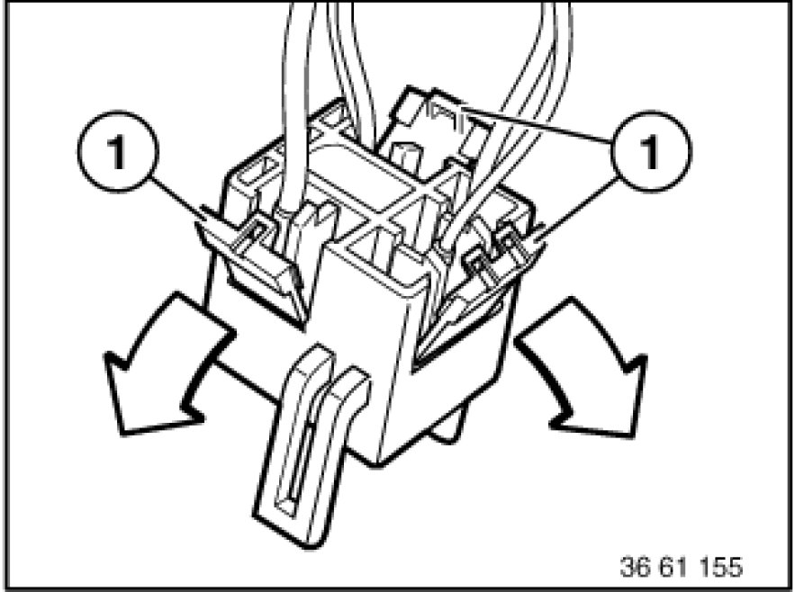
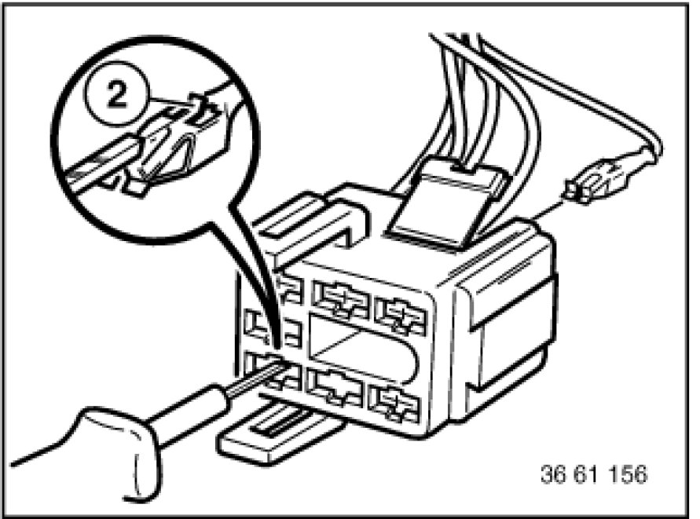

Main Relay (Computer/Fuel System): Service and Repair
61 13 ... - DME master relay connector

Unlock locking flap (1) of corresponding cable.

With special tool 61 1 136 or 61 1 137 (ejector), press back arrester hook (2) of appropriate contact and pull out cable.